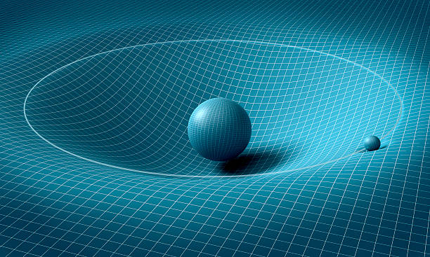

About me

I am a visionary thinker and groundbreaking innovator known for my exceptional contributions in the Field of Physics. My work is marked by a relentless pursuit of knowledge, a commitment to pushing the boundaries of what is possible, and a dedication to the betterment of society. I have held esteemed positions as a professor at renowned institutions, including University of Zurich, Charles University in Prague, and the Institute for Advanced Study in Princeton, where I have fostered intellectual growth and nurtured the talents of promising students. My ideas have transcended the boundaries of my field, impacting literature, art, and the broader cultural landscape.
My Passtime Activities

Reading books
Doing Puzzles

Playing Violen
Research Papers
Principle of relativity

The special principle of relativity states that physical laws should be the same in every inertial frame of reference, but that they may vary across non-inertial ones. This principle is used in both Newtonian mechanics and the theory of special relativity
Thermodynamics

The special principle of relativity states that physical laws should be the same in every inertial frame of reference, but that they may vary across non-inertial ones. This principle is used in both Newtonian mechanics and the theory of special relativity
Statistical mechanics
The special principle of relativity states that physical laws should be the same in every inertial frame of reference, but that they may vary across non-inertial ones. This principle is used in both Newtonian mechanics and the theory of special relativity
Quantum mechanics

The special principle of relativity states that physical laws should be the same in every inertial frame of reference, but that they may vary across non-inertial ones. This principle is used in both Newtonian mechanics and the theory of special relativity
Electromagnetism

The special principle of relativity states that physical laws should be the same in every inertial frame of reference, but that they may vary across non-inertial ones. This principle is used in both Newtonian mechanics and the theory of special relativity
Special Relativity

The special principle of relativity states that physical laws should be the same in every inertial frame of reference, but that they may vary across non-inertial ones. This principle is used in both Newtonian mechanics and the theory of special relativity
Specific Heats

The special principle of relativity states that physical laws should be the same in every inertial frame of reference, but that they may vary across non-inertial ones. This principle is used in both Newtonian mechanics and the theory of special relativity
Photo Gallery


Blog

Insight, Law mass equivalence
Over a century after Einstein’s first derivation of mass-energy equivalence, as his famous result is called because one can select units in which one can express it with an equation of the form E=m , the result continues to receive outstanding empirical support. Furthermore, as the physicist Wolfgang Rindler has pointed out, the result “has been found applicable and valid in many branches of physics, from electromagnetism to general relativity” (Rindler 1991, p. 74). Thus, from Rindler’s perspective, which is shared by many physicists, mass-energy equivalence “… is truly a new fundamental principle of physics” (Rindler 1991, p. 74). The equation E=mc2
is, arguably, the most famous equation in 20th century physics. To appreciate what Einstein’s famous result is about, and what it is not about, we begin in Section 1 with a description of the physics of mass-energy equivalence. In Section 2, we survey six distinct, though related, philosophical interpretations of mass-energy equivalence. We then discuss, in Section 3, the history of derivations of mass-energy equivalence and its philosophical importance. Section 4 is a brief and selective account of empirical confirmation of Einstein’s result that focuses on Cockcroft and Walton’s (1932) first confirmation of mass-energy equivalence and a more recent, and very accurate, confirmation by Rainville et al. (2005). The two main philosophical questions surrounding Einstein’s equation, which are the focus of this entry.
The equation E=mc2 is, arguably, the most famous equation in 20th century physics. To appreciate what Einstein’s famous result is about, and what it is not about, we begin in Section 1 with a description of the physics of mass-energy equivalence. In Section 2, we survey six distinct, though related, philosophical interpretations of mass-energy equivalence. We then discuss, in Section 3, the history of derivations of mass-energy equivalence and its philosophical importance. Section 4 is a brief and selective account of empirical confirmation of Einstein’s result that focuses on Cockcroft and Walton’s (1932) first confirmation of mass-energy equivalence and a more recent, and very accurate, confirmation by Rainville et al. (2005).